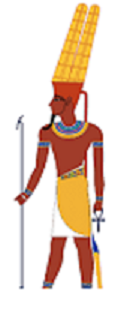
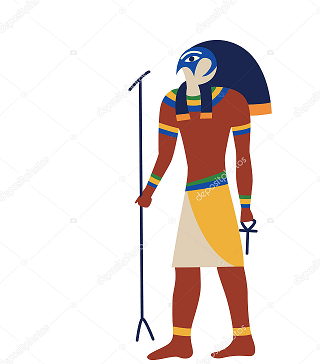
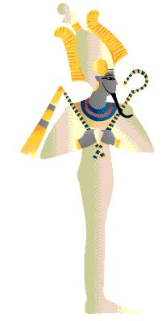
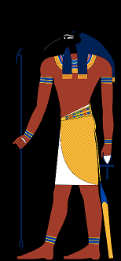
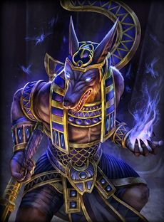
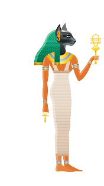

En esta página veremos sobre una de las civilizaciones mas antiguas cuya historia abarca más de tres milenios de las cuales es considera una de las cunas de la civilización estamos hablando del Antiguo Egipto, hablaremos en concreto de sus principales dioses. Nos adentraremos en las deidades en las que creian y de lo fuerte y magnifico que eran. Acompañame a descubrir cuales eran
Ra es el dios del Sol, Ra regía sobre todas las partes del mundo creado: el cielo, la Tierra y el inframundo.
Ra era representado como un halcón, y compartía características con el dios del cielo Horus.
Esta deidad estaba representada con una cabeza de carnero, más específicamente un carnero lanudo con cuernos curvos. Amón se elevó al rango de rey de los dioses.
Dios Horus del cielo y protector de la realeza según la antigua religión egipcia, representado principalmente en forma de halcón, el hijo de Isis y Osiris fue concebido tras el renacimiento del padre a quien vengó y sucedió; es el dios con el que se identificaba todo faraón gobernante. Horus es el dios del sol.
Osiris es el dios más importante del panteón egipcio. Al dios de la resurrección, de la regeneración del Nilo y de la fertilidad también se le atribuye la invención de la agricultura y la religión. Habitualmente, se le representa momificado, con la piel verde o negra y con los atributos de la realeza.
Seth o Set es un dios ctónico, deidad de la fuerza bruta de lo tumultuoso, lo incontenible. Señor del caos, dios de la sequía y del desierto en la mitología egipcia.
Para los egipcios, Anubis fue un importante dios funerario, el cual era representado con cabeza de cánido; dependiendo del autor se habla de chacal, perro o lobo. Las diversas interpretaciones se deben a que el hocico es característico de los perros pero la cola es más propia de los chacales, zorros o lobos
Bastet es una diosa de la mitología egipcia, también denominada Bast, cuya misión era proteger el hogar y simboliza la alegría de vivir, pues se considera la deidad de la armonía y la felicidad.
| Top | Nombre | Descripción |
| 1 | Ra | dios del Sol |
| 2 | Amón | dios de la creación |
| 3 | Seth | dios del caos y la rebelión |
| 4 | Osiris | dios de los muertos |
| 5 | Horus | dios de la caza |
| 6 | Anubis | dios del mas álla |
| 7 | Bastet | diosa protectora |
Si tienes alguna consulta sobre la clasificacion o duda puedes rellenar el siguiente formulario Formulario: